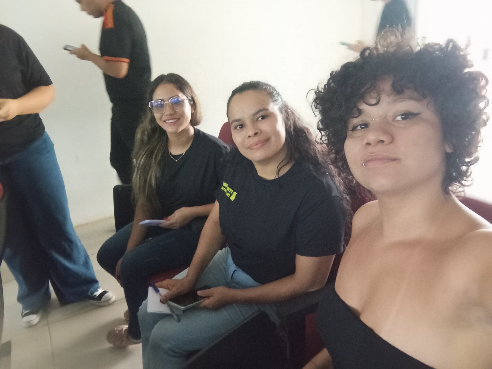

Próximos Eventos
Próximos eventos em que o projeto participará e outras ações voltadas à participação das mulheres na computação.

Palestra
📅 01/12/2025 | 11h45
3° Encontro de Mulheres na Computação
Iniciativa para incentivar a equidade de gênero na área tecnológica através de conversas e networking.
🎙️ Palestra
👤 Devon Lane
Saiba mais ›
Eventos que Participamos
Confira um pouco da nossa trajetória, presença em congressos e atividades que o projeto já realizou na comunidade acadêmica.